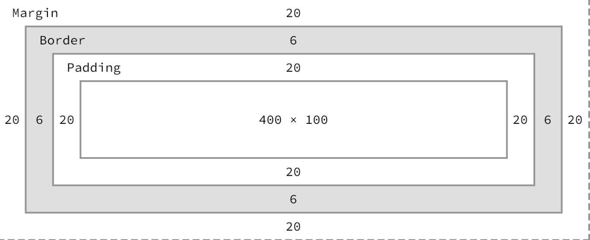
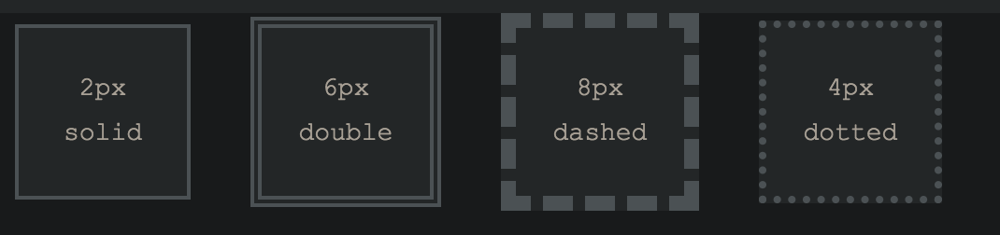
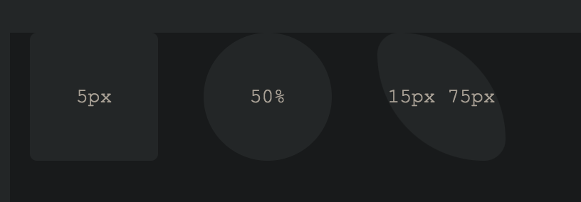

选择器
类型选择器
1 | div { ... } |
1 | <div>...</div> |
类选择器
1 | .awesome { ... } |
1 | <div class="awesome">...</div> |
id选择器
1 | #shayhowe { ... } |
1 | <div id="shayhowe">...</div> |
组合选择器
1 | <div class="hotdog"> |
1 | .hotdog p { |
最佳实践是不要在类选择器前添加类型选择器
id选择器 > 类选择器 > 类型选择器
块级元素/内联元素
块级元素占用任何可用宽度，无论其内容如何，并从新的一行开始。内联级别的元素仅占据其内容所需的宽度，并在同一行上一个接一个地排列。
块级元素通常用于较大的内容，例如标题和结构元素。内联级别的元素通常用于较小的内容，例如一些被选为粗体或斜体的单词。
块级元素可以彼此嵌套，并且可以包装内联级元素。
1 |
|
内联级别(span)的元素不能从新行开始。它们属于文档的正常流程，一个接一个地排列，仅保持其内容的宽度。内联级别的元素可以相互嵌套。但是，它们不能包装块级元素。通常，我们会看到内联级元素具有较小的内容，例如几句话。
1 | <!--基于文本的元素--> |
1 | <!--示例--> |
链接
a标签
1 | <a href="http://shayhowe.com">Shay</a> |
邮件
1 | <a href="mailto:shay@awesome.com?subject=Reaching%20Out&body=How%20are%20you">Email Me</a> |
相对路径/绝对路径
1 | <!-- 相对路径 --> |
链接到同一页面的各个部分
1 | <body id="top"> |
示例
1 | <!--页眉--> |
长度
绝对长度
绝对长度值是最简单的长度值，因为它们固定到物理尺寸，例如英寸，厘米或毫米。最流行的绝对测量单位称为像素，并由px单位符号表示。
Pixels 像素
像素等于1/96英寸；因此，一英寸有96个像素。然而，像素的精确测量在高密度和低密度观看设备之间可能略有不同。
这里的代码使用像素将所有段落的字体大小设置为14像素。1
2
3p {
font-size: 14px;
}
随着观看设备的变化和屏幕尺寸的变化，像素已经失去了一些流行性。
相对长度
除了绝对长度值，还有相对长度值。相对长度值稍微复杂一些，因为它们不是固定的测量单位；它们依赖于另一个测量的长度。
Percentages 百分比
百分比，用%单位表示法表示，是最常用的相对值之一。百分比长度是相对于另一个对象的长度定义的。例如，要将一个元素的宽度设置为50%，我们必须知道它的父元素的宽度，它嵌套在其中的元素，然后标识父元素宽度的50%。1
2
3
4
5
6
7
8.col {
width: 50%;
}
这里我们将class属性值为col的元素的宽度设置为50%。
这50%将相对于元素父元素的宽度进行计算。
百分比对于设置元素的高度和宽度以及构建网页布局非常有用。
我们将经常依靠他们来帮助我们解决这些问题。
Em
长度是根据元素的字体大小计算的。单个em单位等效于元素的字体大小。因此，例如，如果一个元素的字体大小为14像素，并将其width设置为5em，则宽度将等于70像素（14像素乘以5）
1 | .banner { |
如果没有为元素显式指定字体大小，em单位将相对于具有指定字体大小的最近父元素的字体大小。
em单位通常用于设置文本样式，包括字体大小，以及文本周围的间距，包括边距和填充。
display 显示值
block 块级元素
1
2
3p {
display: block;
}inline 内联元素
1
2
3p {
display: inline;
}inline-block
- 使用此值将允许元素充当块级元素，接受所有盒模型属性。但是，该元素将与其他元素一起显示，并且默认情况下不会以新行开始。
none 隐藏
1
2
3div {
display: none;
}
盒模型
1 | div { |
总宽度:1
2
3
4
5
6
7margin-right +
border-right +
padding-right +
width +
padding-left +
border-left +
margin-left
总高度:1
2
3
4
5
6
7margin-top +
border-top +
padding-top +
height +
padding-bottom +
border-bottom +
margin-bottom

1 | Width: 492px = 20px + 6px + 20px + 400px + 20px + 6px + 20px |
毫无疑问，盒子模型是HTML和CSS中比较混乱的部分之一。我们将width属性值设置为400像素，但是元素的实际宽度是492像素。默认情况下，盒子模型是加法模型；因此，要确定一个盒子的实际大小，我们需要考虑盒子的四个侧面的填充、边框和边距。我们的width不仅包括width属性值，还包括左右padding、左右borders以及左右margins的大小。
width & height
每个元素都有默认的宽度和高度。宽度和高度可以是0像素，但默认情况下，浏览器将以大小呈现每个元素。根据元素的显示方式，默认宽度和高度可能足够。如果元素是页面布局的关键，则它可能需要指定的宽度和高度属性值。在这种情况下，可以指定非内联元素的属性值。
元素的默认宽度取决于其display显示值。块级元素的默认宽度为100%，占用整个可用的水平空间。内联和内联块元素水平扩展和收缩以容纳其内容。
内联级别的元素不能具有固定的大小，因此宽度和高度属性仅与非内联元素相关。要为非内联元素设置特定宽度，请使用width属性:
1 | div { |
元素的默认高度由其内容决定。元素将根据需要垂直展开和收缩以容纳其内容。要为非内联元素设置特定高度，请使用height属性:
1 | div { |
调整内联级别元素的大小
请记住，内联级元素将不接受宽度和高度属性或与之相关的任何值。但是，块和inline-block(内联块)元素将接受宽度和高度属性及其相应的值。
Margin & Padding
根据元素的不同，浏览器可能会对元素应用默认margins和padding，以帮助提高易读性和清晰度。我们通常会在基于文本的元素中看到这一点。
这些元素的默认边距和填充可能因浏览器和元素而异。在第1课中，我们讨论了如何使用CSS重置将所有这些默认值调低到零。这样做可以让我们从头做起，明确自己的值。
margin属性允许我们设置元素周围的空间量。
元素的Margins位于任何边框之外，颜色完全透明。
Margins可以用来帮助将元素放置在页面的某个特定位置，也可以用来提供喘息的空间，使所有其他元素保持安全距离。下面是margin属性的作用：1
2
3div {
margin: 20px;
}
margin属性的一个奇怪之处是，内联级元素不接受垂直边距(top和bottom)。但是，块级和内联块元素可以接受这些垂直边距。
Margins仅在内联级别的元素上左右水平工作。Padding在内联级别元素的所有四个边上工作；
但是，顶部和底部的垂直Padding可能会渗入元素上方和下方的线条中。
对于块和内联块元素，Margins和Padding的工作方式与普通的工作方式相同。
1 |
|
边距和填充属性是完全透明的，不接受任何颜色值。不过，由于是透明的，它们会显示相关元素的背景色。对于边距，我们看到父元素的背景色，对于填充，我们看到应用填充的元素的背景色。
Borders
1 | div { |

1 | div { |

Box Sizing
到目前为止，盒子模型一直是一种附加设计。
如果将元素的宽度设置为400像素，然后添加20像素的padding和每边10像素的border，则元素的实际全宽将变为460像素。
请记住，我们需要将width、padding和border属性值相加，以获得元素的实际全宽。
然而，盒子模型可以改变以支持不同的计算。CSS3引入了box size属性，它允许我们精确地更改box模型的工作方式以及元素大小的计算方式。
该属性接受三个主要值content box、padding box和border box，每个值对box大小的计算方式都有略微不同的影响。
Content Box
content box值是默认值，将box模型保留为附加设计。
如果不使用box size属性，这将是所有元素的默认值。元素的大小从width和height属性开始，然后添加任何padding、border或margin属性值。
1 | div { |
Padding Box
padding box值通过在元素的width和height中包含任何padding属性值来更改box模型。
使用padding box值时，如果元素的width为400像素，而padding为每边20像素，则实际宽度仍为400像素。随着padding值的增加，元素中的内容大小会按比例缩小。
如果添加border或margin，这些值将添加到width或height属性中，以计算整个box的大小。例如，如果我们在宽度为400像素的元素的每边添加10像素的border和20像素的padding，实际的全宽将变成420像素。
1 | div { |
随着CSS规范的发展，
box size属性的padding box值已被弃用，不应使用。
Border Box
最后，border box值会更改box模型，以便任何border或padding属性值都包含在元素的宽度和高度中。
当使用border box值时，如果一个元素的宽度为400像素，每边有20个像素的padding，每边有10个像素的border，那么实际的宽度将保持为400像素。
如果我们添加margin，则需要添加这些值来计算整个box的大小。无论使用哪个box大小属性值，都需要添加任何margin值来计算元素的完整大小.1
2
3div {
box-sizing: border-box;
}
不同的
box-sizing值允许从不同区域计算元素及其box的width.
挑选Box Size
一般来说，box-sizing的最佳值是border-box。border-box的值使我们的数学变得非常简单。
如果我们希望一个元素的宽度为400像素，那么它就是400，并且无论我们添加了什么padding或border值，它都将保持400像素的宽度.
此外，我们可以轻松地混合长度值。假设我们希望我们的盒子有40%宽。在元素的每一侧添加20像素的padding和10像素的border并不困难，而且我们仍然可以保证，尽管在其他地方使用了像素值，但box的实际宽度仍将保持40%.